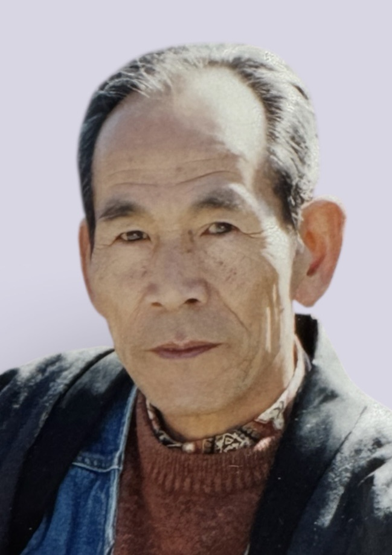
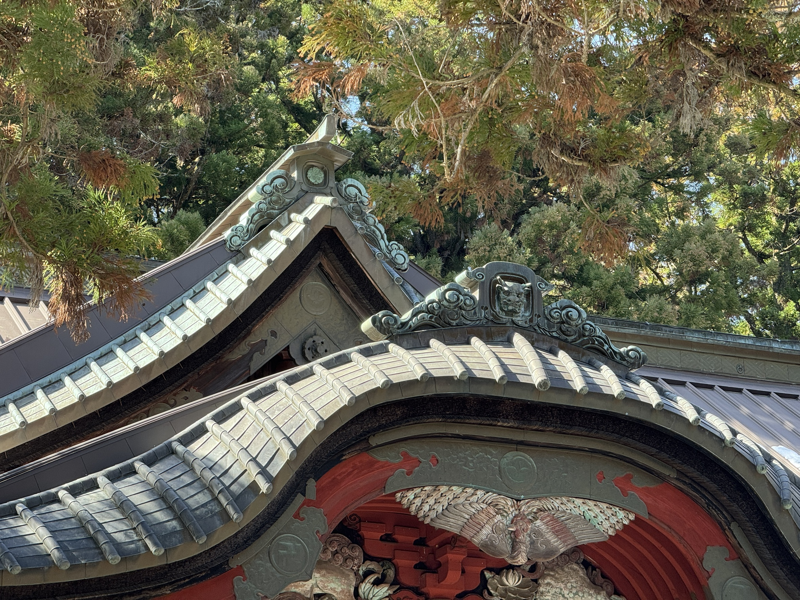
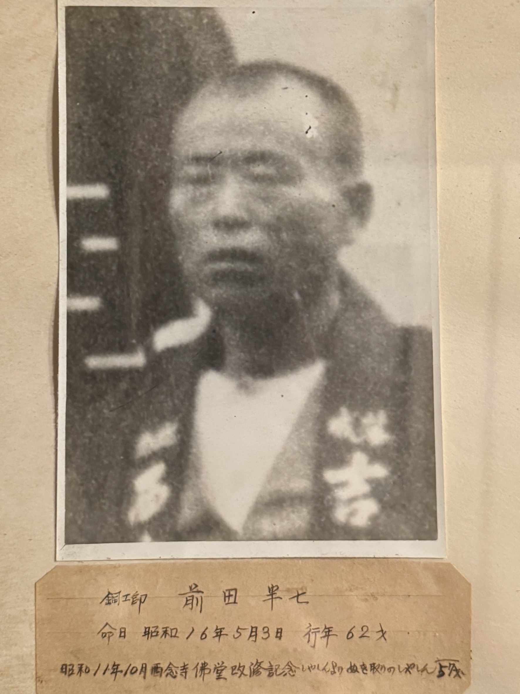

01
Family Background
前田家概要
七代続く「手仕事」の系譜
富士山の麓、富士吉田。この地で前田家は、記録に辿れるだけでも七代にわたり「手仕事」と共に歩んできました。
時代ごとに扱う道具や素材は変われど、物の価値を見極め、自らの手で形にする技と精神は、絶えることなく受け継がれています。その長い歴史の現代における結実が、革工房「前田工芸」です。
02
Origin Story
現在
祖母への想いから始まった「前田工芸」
すべては、中学二年の冬に抱いた「祖母のバッグを直したい」という小さな願いから始まりました。修理のために訪れた革屋で触れた、革の匂いや質感。その瞬間に覚えた感動が、今の活動の原点です。
現在は財布を中心とした革小物を制作しています。何よりも大切にしているのは、素材の質。使う人と共に育ち、時間をかけて美しく変化していく革という素材に、丁寧な手仕事で命を吹き込んでいます。

03
Grandfather
祖父の歩み
職人の厳しさと、受け継がれた財布
私の祖父は、銅板を叩き、屋根を葺く板金職人でした。1994年からはこの場所で骨董店を営み、物の本質を見抜く「審美眼」を大切にしていました。
当初、私が革職人の道へ進むことに祖父は反対していました。しかしある日、「これを参考にするといい」と、長年愛用した自らの財布を差し出してくれました。職人として、そして家族としてのエールが込められたその財布は、今も私の物作りの指針となっています。

04
Great-Grandfather
曽祖父の歩み
寺社仏閣を支えた技
祖父のさらに前の代、曽祖父もまた、厳しい職人の世界に生きた人でした。彼は寺社仏閣の屋根を専門に手がける職人として、その生涯を技術の研鑽に捧げました。
金属という、一見すると硬く冷たい素材に、熱と技を加えて優美な曲線を描き出す。その「素材と対話する」姿勢は、現在の革制作における私の姿勢にも色濃く反映されています。

05
Great-Great-Grandfather
高祖父の歩み
江戸から続く、信仰の地の守り手
前田家がこの富士吉田に根を下ろしたのは、江戸時代後期まで遡ります。高祖父は明治時代、富士山信仰の拠点である「北口本宮冨士浅間神社」の屋根を手がけました。
神社の欄干には、当時の仕事を記した「銅板屋根職人 前田半七」の名が今も刻まれています。家に残された古い道具たちは、彼らが単なる作業者ではなく、地域の象徴を守る誇り高き職人であったことを物語っています。
06
Conclusion
時代を超えて、新しい形へ
屋根を葺く、銅を叩く、骨董を愛でる。形を変えながら受け継がれてきた前田家の精神は、今、革という新しい素材へと昇華されました。
「良い素材を選び、長く使える一品を届ける」。
先祖が大切にしてきたこのシンプルな真理を胸に、前田工芸はこれからも、富士山の麓から新しい手仕事を届けていきます。